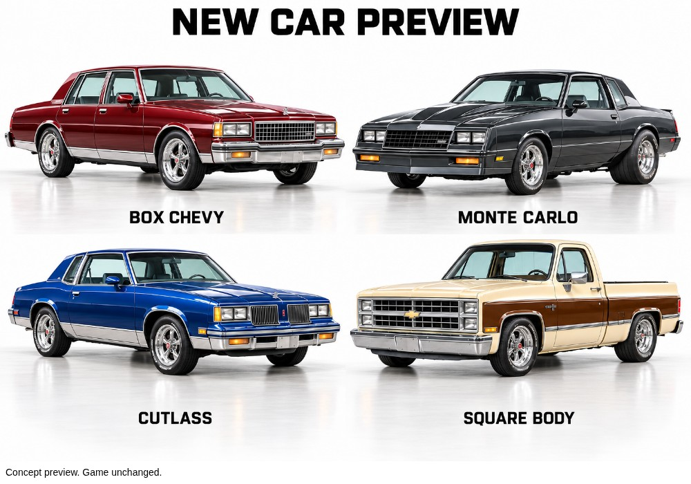

New car concepts
Box Chevy, Monte Carlo, Cutlass, and square-body pickup. These are proposed designs for review. The current game's cars have not been changed.

Box Chevy, Monte Carlo, Cutlass, and square-body pickup. These are proposed designs for review. The current game's cars have not been changed.
